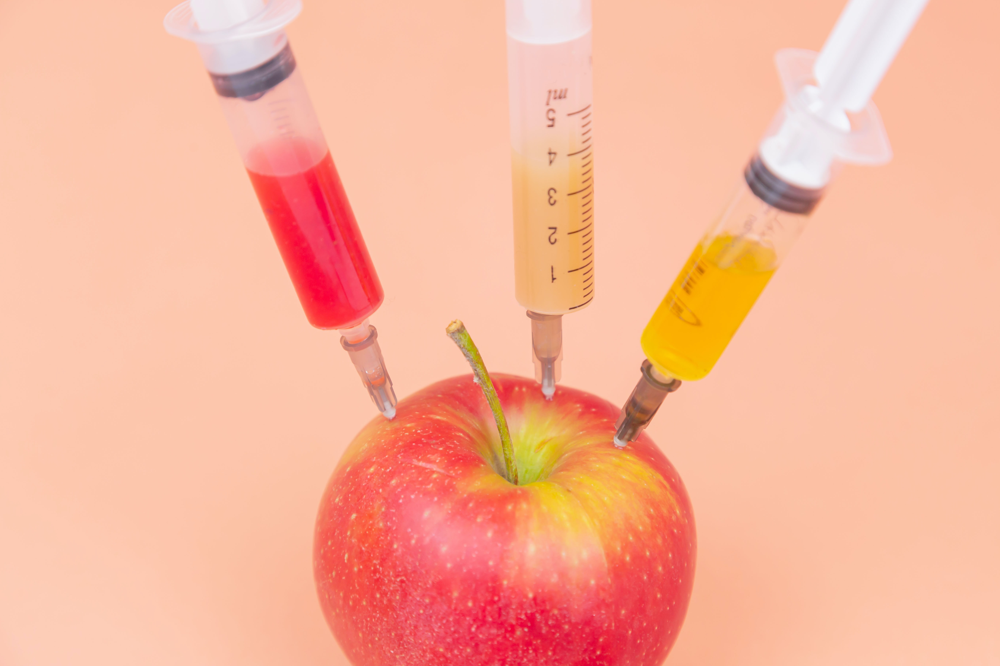
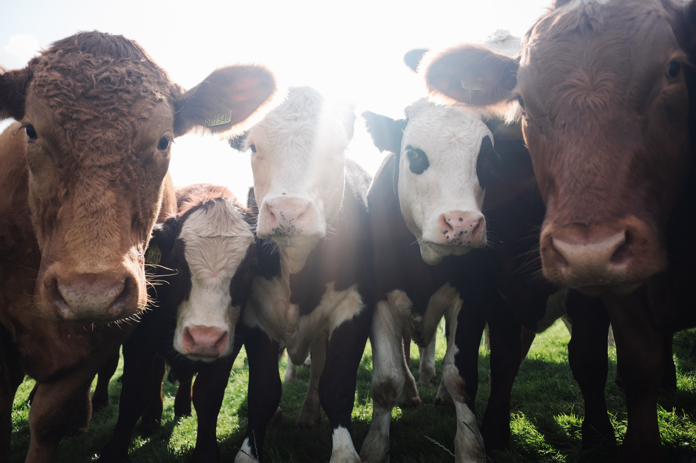

Some individuals are allergic to fruit.
Some individuals are allergic to peanuts.

Some choose to eat a plant-based diet.

And some are not fond of the animal abuse that is taken place for human consumption.
There are many reasons as to why someone restricts their diet. People with allergens did not choose to restrict food from their diet. Others who choose to be vegetarian and vegan understood the cost. Regardless, eating out at restaurants is difficult when some dishes do not cater to your needs.
Top 4 Tips to Remember
Research
Do the research: It will help a ton to look at the restaurant beforehand.
Read moreReview
Check the restaurant reviews regarding your dietary needs.
Read moreThe Menu
Dont forget the menu is your friend! It includes lots of accessible information.
Read moreRelax
Most importantly, it takes time to understand dietary needs. Relax.
Read moreClick on the image below to learn more about how you can eat out efficiently!

John Doe
Architect & Engineer
We love that guy